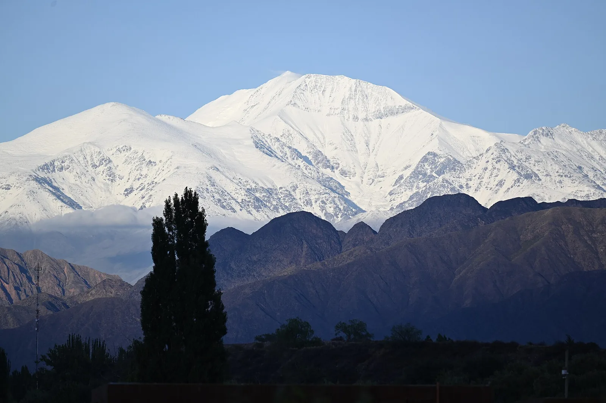
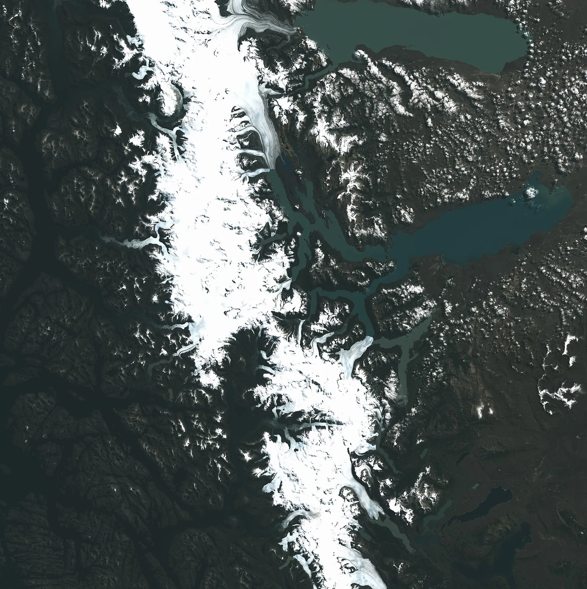

S3 · Sur
S3 · Süden
S3 · South
Cordillera de los Andes
En los Andes vi al cóndor subir por espirales de aire caliente que sólo él ve.
In den Anden sah ich den Kondor auf Spiralen warmer Luft steigen, die nur er sieht.
In the Andes I saw the condor rise on spirals of warm air that only it can see.
Información
El cóndor andino es una de las aves voladoras más grandes del mundo. Casi no bate las alas: se deja subir por las corrientes de aire caliente que ascienden contra las laderas y puede recorrer cientos de kilómetros planeando.
Está categorizado como vulnerable. Se estima una población mundial de unos 6.700 ejemplares, en descenso, y el principal motivo no es la caza directa sino el envenenamiento: los cebos tóxicos que se colocan ilegalmente para matar depredadores del ganado, y el plomo de la munición en los animales de los que se alimenta.
Information
El cóndor andino es una de las aves voladoras más grandes del mundo. Casi no bate las alas: se deja subir por las corrientes de aire caliente que ascienden contra las laderas y puede recorrer cientos de kilómetros planeando.
Está categorizado como vulnerable. Se estima una población mundial de unos 6.700 ejemplares, en descenso, y el principal motivo no es la caza directa sino el envenenamiento: los cebos tóxicos que se colocan ilegalmente para matar depredadores del ganado, y el plomo de la munición en los animales de los que se alimenta.
Information
El cóndor andino es una de las aves voladoras más grandes del mundo. Casi no bate las alas: se deja subir por las corrientes de aire caliente que ascienden contra las laderas y puede recorrer cientos de kilómetros planeando.
Está categorizado como vulnerable. Se estima una población mundial de unos 6.700 ejemplares, en descenso, y el principal motivo no es la caza directa sino el envenenamiento: los cebos tóxicos que se colocan ilegalmente para matar depredadores del ganado, y el plomo de la munición en los animales de los que se alimenta.
Vi al cóndor caer envenenado por un cebo que era para otro.
Ich sah den Kondor fallen, vergiftet von einem Köder, der für einen anderen gedacht war.
I saw the condor fall, poisoned by a bait meant for someone else.
El cóndor no mata: come animales ya muertos. Por eso un solo cebo envenenado puede matar a muchos de una vez. En 2018, en Mendoza, se encontraron 34 cóndores muertos alrededor de un cadáver envenenado a propósito para eliminar depredadores del ganado. En el sur de Bolivia se repitió después un episodio con otros 34.
El cóndor no mata: come animales ya muertos. Por eso un solo cebo envenenado puede matar a muchos de una vez. En 2018, en Mendoza, se encontraron 34 cóndores muertos alrededor de un cadáver envenenado a propósito para eliminar depredadores del ganado. En el sur de Bolivia se repitió después un episodio con otros 34.
El cóndor no mata: come animales ya muertos. Por eso un solo cebo envenenado puede matar a muchos de una vez. En 2018, en Mendoza, se encontraron 34 cóndores muertos alrededor de un cadáver envenenado a propósito para eliminar depredadores del ganado. En el sur de Bolivia se repitió después un episodio con otros 34.
Galería
Galerie
Gallery



Fuentes
Quellen
Sources
- Ministerio de Ambiente, Argentina, Cóndor: una especie clave en el equilibrio del ecosistema andino — https://www.argentina.gob.ar/interior/ambiente/accion/condor-andino consultado 2026-10-05abgerufen 2026-10-05accessed 2026-10-05
- Sistema de Información de Biodiversidad, Argentina, Vultur gryphus (Cóndor Andino) — https://sib.gob.ar/especies/vultur-gryphus consultado 2026-10-05abgerufen 2026-10-05accessed 2026-10-05